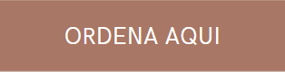
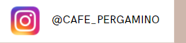
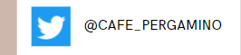

.
Bienvenido, estamos muy felices de tenerte aqui. Somos una cafeteria que apenas va iniciando y contar con tu apoyo es un honor para nosotros.Somos una cafeteria llamada "Pergamino" en honor al nombre que recibe una de las tantas etapas del cafe cuando este esta en el proceso de secado. |
"Los granos de café recorren un largo trayecto para llegar a nuestra taza. Antes de tostarlos y prepararlos en una bebida es necesario despojarlos de las capas que los protegen dentro del fruto. Esto se logra mediante un proceso húmedo o seco que deja al grano cubierto sólo con una cáscara llamada pergamino, que una vez retirada produce un grano limpio y listo para su comercialización, nombrado café verde." |
.
